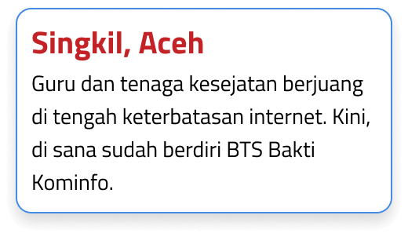

Scroll down
TERNYATA, 30% dari 83.794 desa belum tersentuh layanan digital atau blank spot.

Desa-desa tersebut berada di daerah yang sulit dijangkau dan terkendala infrastruktur seperti Kabupaten Rote Ndao dan Kabupaten Aceh Singkil.
SINYAL DI TITIK SELATAN INDONESIA
Desember 2020
Aliran listrik masuk ke Desa Tebole.
April 2023

Tower BTS akhirnya dibangun di Desa Tebole.
Juli 2023
Tower BTS tersebut diresmikan oleh Menteri Komunikasi dan Informatika, Johnny G. Plate.
Hari Ini
Hingga hari ini, melalui BAKTI, pemerintah telah berhasil membangun 21 BTS dan akses internet di 80 titik.
bagaimana BAKTI DAPAT mengubah kehidupan masyarakat Rote!
{{item.name}}
{{prize_title}}
{{prize_text}}
Angin Segar Di Ujung Tenggara Aceh
Peran Bakti Terhadap...
Guru di Singkil, Aceh
- Meningkatkan akses informasi dan materi pembelajaran
Sekarang, guru di Singkil dapat mengakses materi pembelajaran digital dari situs-situs pemerintah, lembaga pendidikan, atau platform pembelajaran online. - Mempermudah kolaborasi dan berbagi informasi antar guru
Kini, guru di Singkil dapat bergabung dalam komunitas guru online untuk berbagi informasi tentang metode pembelajaran, strategi mengajar, atau sumber belajar yang bermanfaat. - Meningkatkan kompetensi dan profesionalisme guru
Guru di Kabupaten Singkil dapat mengikuti program pelatihan online yang diselenggarakan oleh Kementerian Pendidikan dan Kebudayaan.
Dokter di Puskesmas Singkil, Aceh
- Meningkatkan akses layanan kesehatan
Dokter di Puskesmas Singkil dapat menggunakan aplikasi telemedisin untuk memberikan konsultasi kesehatan kepada pasien di daerah terpencil. - Meningkatkan partisipasi masyarakat dalam pembangunan kesehatan
Meningkatnya penggunaan media sosial untuk mengajak masyarakat berpartisipasi dalam kegiatan kesehatan, seperti kampanye kesehatan atau donor darah. - Meningkatkan efisiensi dan efektivitas pengelolaan puskesmas
Bertambahnya penggunaan aplikasi manajemen puskesmas untuk mengelola data pasien, jadwal kerja, atau stok obat-obatan
Coba tebak! Hoax atau Fakta?
Dokter di Puskesmas Sangkil, Aceh harus berlangganan INDIHOME
Pilihanmu kurang tepat! Sayangnya, dokter di Sangkil tetap harus berlangganan internet ke Telkom untuk mengindari gangguan sistem.
Kamu benar! Dokter di Sangkil berlangganan internet ke Telkom karena layanan kesehatan di puskesmas tidak boleh terganggu hanya gara-gara internet.
Berbagai media sosial seperti Facebook, Instagram, TikTok, dan YouTube dapat dinikmati dengan mudah, tetapi tidak dengan laman website
Pilihanmu kurang tepat! Faktanya, sinyal di sini penuh, tapi sayangnya tidak bisa digunakan untuk browsing.
Kamu benar! Menariknya, meski akses internet tak terhubung alias koneksi terputus, masyarakat tetap bisa membuka medsos dengan lancar.
Belum terdapat tower BTS BAKTI di Kabupaten Aceh Singkil.
Yes, itu HOAX! Saat ini terdapat lima BTS BAKTI Kominfo yang sudah on air di Kabupaten Aceh Singkil, yakni di Kelurahan Sintuban Makmur di Kecamatan Danau Paris; Kelurahan Ujung Sialit dan Kelurahan Suka Makmur di Kecamatan
Pulau Banyak Barat; Kelurahan Sumber Mukti dan Kelurahan Mukti Lincir di Kecamatan Kota Baharu.
Ternyata, hingga hari ini sudah ada lima BTS BAKTI Kominfo yang sudah on air di Kabupaten Aceh Singkil, yakni di Kelurahan Sintuban Makmur di Kecamatan Danau Paris; Kelurahan Ujung Sialit dan Kelurahan Suka Makmur di Kecamatan
Pulau Banyak Barat; Kelurahan Sumber Mukti dan Kelurahan Mukti Lincir di Kecamatan Kota Baharu.
Bersama BAKTI Dukung Digitalisasi Di Singkil
Selain upaya pembangunan tower BTS oleh BAKTI, Pejabat Bupati Aceh Singkil, juga sudah mempersiapkan Aplikasi Singkil Smart Info dengan berbagai manfaatnya!
Kendala & Solusi Pemerataan Aksesibilitas Digital Di Wilayah 3T!
-
Bagaimana mempercepat aksesibilitas digital di wilayah 3T?
-
Mengapa akses internet di wilayah 3T belum optimal?
-
Apa upaya BAKTI mengoptimalkan akses internet di wilayah 3T?
-
Target desa bebas blank spot pada 2024?

Syarat Digital Indonesia Maju
Untuk mewujudkan visi Indonesia Maju 2045 pemerintah perlu melakukan akselerasi konektivitas melalui peningkatan kapasitas, cakupan dan kualitas infrastruktur telekomunikasi.